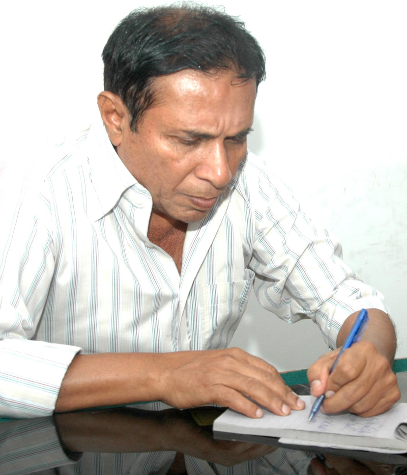

April 18, 2021
A discreet exit of a discreet man
© Fasahat Mohiuddin
Whenever you hear about someone taking to their bed or being hospitalised, one of the ways you fear it might end is, quite naturally, in death. And however many deaths may have occurred during your life, you never get used to it — as you’re most brutally reminded every time it happens again.
In the case of our colleague Fasahat Mohiuddin, who passed away on Friday (April 16), the shock was all the more intense, because he’d been discharged from the hospital a few days after he’d been admitted to it.
Knowing that he was back home had given a false sense of relief to those of us who hadn’t been able to keep in touch with him on a regular basis, so it took me a lot more than a few minutes to accept the undeniable fact that he was gone.
In December 2012, when I’d joined The News, we didn’t have an online news management system. We were still using folders: the reporters would drop their news stories in one folder for the city editor or the shift incharge to move them to another folder, from where they’d be assigned to the subeditors by moving them into their individual folders.
On my second day at the office, I found a file named ‘wheelbarrow’ in my folder. What began as curiosity over the filename ended in utter confusion by the time I was done editing the news story.
I asked a colleague to explain to me why there wasn’t even a single mention of a wheelbarrow in the story. And I must’ve done this with a look of bewilderment, because he laughed out loud — partly at my baffled expression, partly at what he already knew and partly at the fact that I didn’t know it yet — before he let me in on the big secret.
Fasahat sahib liked naming his files with words that had nothing to do with the news stories in them. This wasn’t just creative expression. It spoke volumes about the kind of person he was.
This little habit of his wiped off the impression you’d normally have of a journalist of his age and with such professional experience as his. This little thing told me he wasn’t stuck-up or unnecessarily serious. My first impression of him proved true when I met him for the first time.
When you’d have a conversation with him, you’d never feel like you’re talking to someone who’s about double your age and has almost 10 times more professional experience than you.
On the contrary, he’d give you so much respect that you’d feel embarrassed, largely because you rarely come across such people, especially if they’re older and more professionally experienced.
It wasn’t in his nature to impose on you. And I don’t believe I remember ever seeing him angry. As for his demeanour, ‘discretion’ was his middle name. When there weren’t many people around, he was able to talk more freely, but when there was a possibility of being overheard, almost every conversation with him was held in almost hushed tones.
After Covid-19 hit the world and we started working from home, my conversations with Fasahat sahib continued intermittently on WhatsApp and email. The pandemic made things worse for everyone, including him, but he had shared with me his hopes and quite feasible plans to stay afloat.
As the health crisis carried on, our conversations were few and far between. I’d wanted to follow up many things that we’d talked about, fill in the missing pieces, but I suppose being confused about all those things right now only means that I’ve come full circle, as far as my association with Fasahat sahib is concerned.
Yes, he was discreet. The man never made a loud entrance at the office, and he almost always left for home as discreetly as he had arrived. And right now, his final discretion seems very pronounced.
First published in The News International